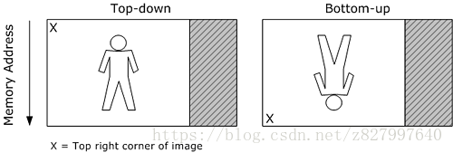

Image Stride（内存图像行跨度）
When a video image is stored in memory, the memory buffer might contain extra padding bytes after each row of pixels. The padding bytes affect how the image is store in memory, but do not affect how the image is displayed.
当视频图像存储在内存时，图像的每一行末尾也许包含一些扩展的内容，这些扩展的内容只影响图像如何存储在内存中，但是不影响图像如何显示出来；
The stride is the number of bytes from one row of pixels in memory to the next row of pixels in memory. Stride is also called pitch. If padding bytes are present, the stride is wider than the width of the image, as shown in the following illustration.
Stride 就是这些扩展内容的名称，Stride 也被称作 Pitch，如果图像的每一行像素末尾拥有扩展内容，Stride 的值一定大于图像的宽度值，就像下图所示：
Two buffers that contain video frames with equal dimensions can have two different strides. If you process a video image, you must take into the stride into account.
两个缓冲区包含同样大小（宽度和高度）的视频帧，却不一定拥有同样的 Stride 值，如果你处理一个视频帧，你必须在计算的时候把 Stride 考虑进去；
In addition, there are two ways that an image can be arranged in memory. In a top-down image, the top row of pixels in the image appears first in memory. In a bottom-up image, the last row of pixels appears first in memory. The following illustration shows the difference between a top-down image and a bottom-up image.
另外，一张图像在内存中有两种不同的存储序列（arranged），对于一个从上而下存储（Top-Down） 的图像，最顶行的像素保存在内存中最开头的部分，对于一张从下而上存储（Bottom-Up）的图像，最后一行的像素保存在内存中最开头的部分，下面图示展示了这两种情况：

A bottom-up image has a negative stride, because stride is defined as the number of bytes need to move down a row of pixels, relative to the displayed image. YUV images should always be top-down, and any image that is contained in a Direct3D surface must be top-down. RGB images in system memory are usually bottom-up.
一张从下而上的图像拥有一个负的 Stride 值，因为 Stride 被定义为[从一行像素移动到下一行像素时需要跨过多少个像素]，仅相对于被显示出来的图像而言；而 YUV 图像永远都是从上而下表示的，以及任何包含在 Direct3D Surface 中的图像必须是从上而下，RGB 图像保存在系统内存时通常是从下而上；
Video transforms in particular need to handle buffers with mismatched strides, because the input buffer might not match the output buffer. For example, suppose that you want to convert a source image and write the result to a destination image. Assume that both images have the same width and height, but might not have the same pixel format or the same image stride.
尤其是视频变换，特别需要处理不同 Stride 值的图像，因为输入缓冲也许与输出缓冲不匹配，举个例子，假设你想要将源图像转换并且将结果写入到目标图像，假设两个图像拥有相同的宽度和高度，但是其像素格式与 Stride 值也许不同；
The following example code shows a generalized approach for writing this kind of function. This is not a complete working example, because it abstracts many of the specific details.
下面代码演示了一种通用方法来编写这种功能，这段代码并不完整，因为这只是一个抽象的算法，没有完全考虑到真实需求中的所有细节；
void ProcessVideoImage(
BYTE* pDestScanLine0,
LONG lDestStride,
const BYTE* pSrcScanLine0,
LONG lSrcStride,
DWORD dwWidthInPixels,
DWORD dwHeightInPixels
)
{
for (DWORD y = 0; y < dwHeightInPixels; y++)
{
SOURCE_PIXEL_TYPE *pSrcPixel = (SOURCE_PIXEL_TYPE*)pDestScanLine0;
DEST_PIXEL_TYPE *pDestPixel = (DEST_PIXEL_TYPE*)pSrcScanLine0;
for (DWORD x = 0; x < dwWidthInPixels; x +=2)
{
pDestPixel[x] = TransformPixelValue(pSrcPixel[x]);
}
pDestScanLine0 += lDestStride;
pSrcScanLine0 += lSrcStride;
}
}This function takes six parameters:
A pointer to the start of scan line 0 in the destination image.
The stride of the destination image.
A pointer to the start of scan line 0 in the source image.
The stride of the source image.
The width of the image in pixels.
The height of the image in pixels.
这个函数需要六个参数：
1. 目标图像的起始扫描行的内存指针
2. 目标图像的 Stride 值
3. 源图像的起始扫描行的内存指针
4. 源图像的 Stride 值
5. 图像的宽度值（以像素为单位）
6. 图像的高度值（以像素为单位）
The general idea is to process one row at a time, iterating over each pixel in the row. Assume that SOURCE_PIXEL_TYPE and DEST_PIXEL_TYPE are structures representing the pixel layout for the source and destination images, respectively. (For example, 32-bit RGB uses the RGBQUAD structure. Not every pixel format has a pre-defined structure.) Casting the array pointer to the structure type enables you to access the RGB or YUV components of each pixel. At the start of each row, the function stores a pointer to the row. At the end of the row, it increments the pointer by the width of the image stride, which advances the pointer to the next row.
这里的要点是如何一次处理一行像素，遍历一行里面的每一个像素，假设源像素类型与目标像素类型各自在像素的层面上已经结构化来表示一个源图像与目标图像的像素，（举个例子，32 位 RGB 像素使用 RGBQUAD 结构体，并不是每一种像素类型都有预定义结构体的）强制转换数组指针到这样的结构体指针，可以方便你直接读写每一个像素的 RGB 或者 YUV 值，在每一行的开头，这个函数保存了一个指向这行像素的指针，函数的最后一行，通过图像的 Stride 值直接将指针跳转到图像的下一行像素的起始点；
This example calls a hypothetical function named TransformPixelValue for each pixel. This could be any function that calculates a target pixel from a source pixel. Of course, the exact details will depend on the particular task. For example, if you have a planar YUV format, you must access the chroma planes independently from the luma plane; with interlaced video, you might need to process the fields separately; and so forth.
To give a more concrete example, the following code converts a 32-bit RGB image into an AYUV image. The RGB pixels are accessed using an RGBQUAD structure, and the AYUV pixels are accessed using aDXVA2_AYUVSample8 Structure structure.